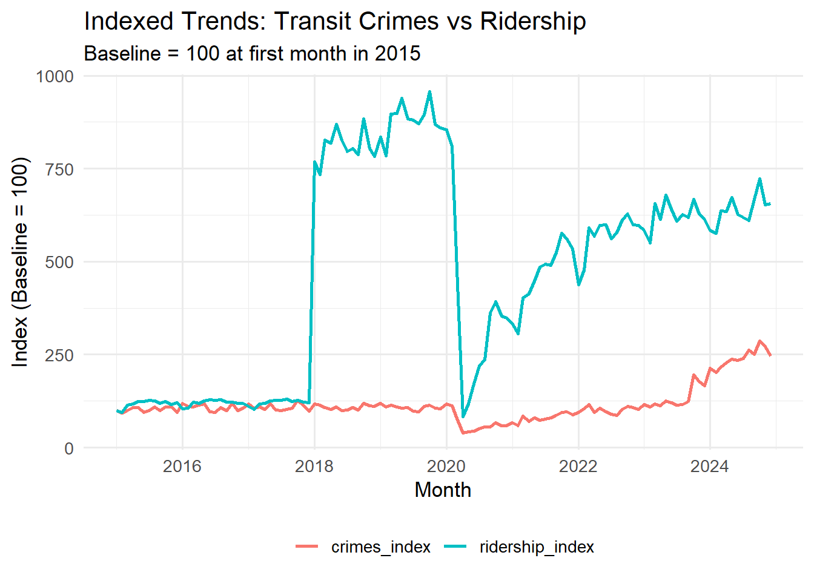
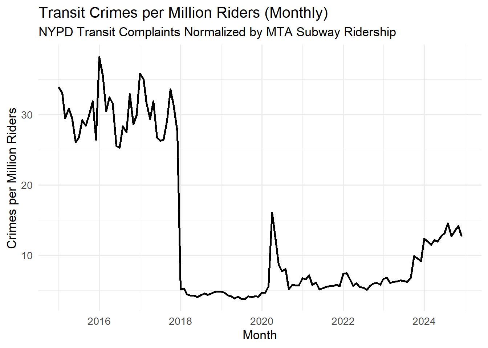
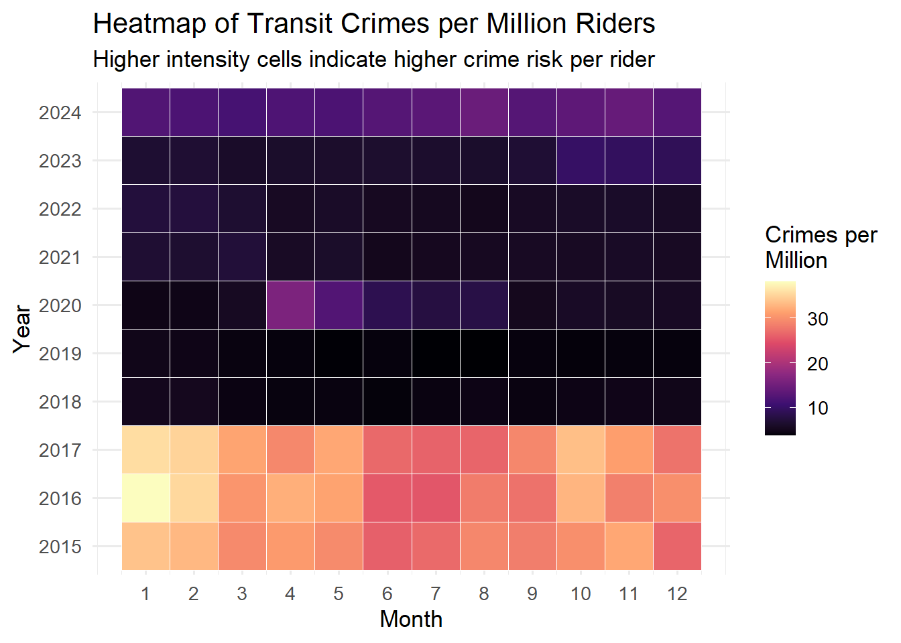

Show Code
# ---- Loading Libraries ----
library(tidyverse)
library(lubridate)
library(janitor)
library(httr2)
library(readr)
library(scales)
library(gt)This report analyzes how subway ridership volume and transit-related crime correlate across NYC’s transit system (2015–2025).
This report makes use of API-acquired open data, monthly aggregation, robust data cleaning, correlation analysis, as well as visualizations in order to analyze time-varying crime–ridership dynamics.
✔ My SQ examines how both monthly subway ridership and transit-related crime move together
✔ I use NYPD Complaint Data (filtered by subway incidents) as well as MTA Monthly Ridership from the years 2015–2025
✔ I evaluate if higher ridership corresponds to higher crime counts at a system-wide level
✔ I also separates my analysis into overall, pre-2022, and post-2022 time frames to accommodate for any COVID-era disruptions
✔ Finally, I incorporate correlation measures, indexed trends, as well as crimes per million riders to capture both risk and volume performance
➡ The overarching goal is to assess whether transit crime correlates with ridership volume, focusing on how this relationship may have changed in more recent years.
✔ tidyverse — this toolkit is responsible for visualization and transformation
✔ lubridate — simplifies work related to time based grouping
✔ janitor — cleans column names
✔ httr2 — handles API requests to download MTA and NYPD datasets
✔ readr — efficient reading of large CSV files
✔ scales — strengthens numeric formatting for plots such as labels and percentages
➡ These libraries provide the foundational tools for acquiring, cleaning, merging, and analyzing crime and ridership datasets.
# ---- Loading Libraries ----
library(tidyverse)
library(lubridate)
library(janitor)
library(httr2)
library(readr)
library(scales)
library(gt)✔ This creates a dedicated folder (data/courseproject) to store datasets
✔ Ensures a directory exists prior to saving files. This prevents any “write errors”
✔ recursive = TRUE <- this allows creation of nested folders (if not already existing)
✔ Helps to keep all raw data reproducible and organized across different machines
dir.create(file.path("data", "courseproject"), showWarnings = FALSE, recursive = TRUE)✔ Obtains system-wide monthly ridership for subways in NYC (2008–present)
✔ Makes use of NY State Open Data archival API for stable downloading
✔ Saves dataset to data/courseproject/ for project structure that is consistent
✔ req_progress() provides clear status of download when taking care of larger files
✔ read_csv() loads data efficiently for merging as well as for pre-processing
# 3.2 MTA Monthly Ridership (Subway, 2008–Present)
url_data_monthly_ridership <- "https://data.ny.gov/api/archival.csv?id=xfre-bxip&version=64&method=export"
request(url_data_monthly_ridership) |>
req_progress() |>
req_perform(path = file.path("data", "courseproject", "monthly_ridership.csv"))<httr2_response>
GET https://data.ny.gov/api/archival.csv?id=xfre-bxip&version=64&method=export
Status: 200 OK
Content-Type: text/csv
Body: On disk 'data/courseproject/monthly_ridership.csv' (59225 bytes)monthly_ridership_df <- read_csv(
file.path("data", "courseproject", "monthly_ridership.csv"),
show_col_types = FALSE
)✔ Sets a 10-year analysis window for consistency amongst all datasets
✔ Makes sure that ridership and crime data are the same on the monthly timeline
✔ Deletes older records (pre-2015) as well as incomplete future records
✔ Creates unified structure in order for accurate merging of NYPD and MTA
➡ Creating this shared date range is important to produce valid comparisons
# 4. Global Date Window for SQ (2015–2025)
start_date <- as.Date("2015-01-01")
end_date <- as.Date("2025-12-31")✔ Only subway-related incidents are included after filtering NYPD complaint records
✔ Takes each complaint as single crime event for aggregation on system-wide level
✔ Converts complaint dates into monthly units, enabling time-aligned comparison with ridership ✔ Helps to ensures that only unique complaint numbers are counted in order to avoid duplication
✔ Outputs crime totals (monthly) needed to evaluate the SQ
➡ Creates the core dataset in order to analyze how transit crime levels fluctuate relative to subway ridership.
# 5. Building Monthly Transit Crime Counts (System-Wide)
#SQ: Does subway ridership volume correlate with the number of crimes?
#Here we treat transit-related complaints as "crimes".
#ridership <- readr::read_csv(path_ridership, show_col_types = FALSE)✔ This step removes complaints so that only incidents between 2015 and 2025 are included
✔ Removes incomplete or outdated records that falls outside the range for analysis
➡ This helps ensure that the dataset is focused and pertains to the SQ.
# =========================================================
# 🔗 4. restricting to our 2015–2025 window
# =========================================================
complaints_transit <- complaints_transit |>
filter(between(date, start_date, end_date))✔ Uses distinct() in order to keep only one record per complaint number. This helps to prevent any accidental double-counting
✔ Also groups the cleaned records by month, keeping in line with the structure of the ridership dataset
✔ Counts total amount of transit-related complaints during each month
✔ Produces a reliable and clean felony_count metric for analysis of crime
# =========================================================
# 📊 5. creating monthly transit crime counts
# =========================================================
complaints_transit <- complaints_transit |>
group_by(month) |>
summarise(
felony_count = n(), # total transit complaints per month
.groups = "drop"
)
summary(complaints_transit$felony_count) Min. 1st Qu. Median Mean 3rd Qu. Max.
368.0 894.5 993.5 1070.8 1071.0 2658.0 head(complaints_transit)✔ This step standardizes names of columns for consistency
✔ Detects date column and total ridership column
✔ Using floor_date(), converts date values into periods on the monthly level
✔ Helps ensure the ridership field is properly listed as a numeric value ✔ Filters the dataset to the 2015–2025 analysis window for our scope of study
✔ Ridership at the monthly level is aggregated, producing a subways_total metric
➡ This step creates a monthly ridership series essential in comparing against monthly crime counts.
# =========================================================
# 📈 6. Building System Wide Monthly Subway Ridership
# =========================================================
monthly_ridership_df <- monthly_ridership_df |>
clean_names()
# ---- A) Trying to detect date and subway ridership columns ----
date_col_r <- names(monthly_ridership_df)[
str_detect(names(monthly_ridership_df),
regex("date|month|period", ignore_case = TRUE))
][1]
sub_col_r <- names(monthly_ridership_df)[
str_detect(names(monthly_ridership_df),
regex("subway|subways.*total|ridership", ignore_case = TRUE))
]
to_numeric <- function(x) {
if (is.numeric(x)) as.numeric(x) else readr::parse_number(as.character(x))
}
ridership_month <- monthly_ridership_df |>
mutate(
month = floor_date(
parse_date_time(!!sym(date_col_r),
orders = c("ymd", "mdy", "my")),
"month"
),
subways_total = to_numeric(.data[[sub_col_r[1]]])
) |>
filter(
between(month, start_date, end_date),
!is.na(subways_total)
) |>
group_by(month) |>
summarise(
subways_total = sum(subways_total, na.rm = TRUE),
.groups = "drop"
)✔ This combines monthly ridership totals with monthly crime counts through the use of a left_join()
✔ Takes out months where any dataset is missing values to keep analytical integrity
✔ Outputs crimes per million riders, a measure (normalized) which accounts for changes in ridership volume ✔ Lets the analysis differentiate amongst changes in crime totals as well as changes in crime risk per rider
✔ Outputs a merged dataset that is used for visualization and correlation analysis
➡ The sanity checks in the code below (summary() and head()) confirm that the dataset that is merged works as expected prior to further analysis.
# 7. Merging Crime and Ridership & creating normalized metric
merged <- ridership_month |>
left_join(complaints_transit, by = "month") |>
filter(!is.na(felony_count), !is.na(subways_total)) |>
mutate(
crimes_per_million = 1e6 * felony_count / subways_total
)
# =========================================================
# sanity check
# =========================================================
summary(merged$crimes_per_million) Min. 1st Qu. Median Mean 3rd Qu. Max.
3.757 5.362 6.768 13.868 26.505 38.196 head(merged)➡ Overall, it can be seen that rider risk decreases prior to COVID, becomes unpredictable during the pandemic, and then stabilizes again once ridership begins recovering.
#Monthly Transit Crime Trend with LOESS Smoothing
p_trend <- ggplot(merged, aes(month, felony_count)) +
geom_line(alpha = 0.5) +
geom_smooth(se = FALSE, linewidth = 1.1) +
labs(
title = "Monthly Transit Crime Trend (2015–2025)",
subtitle = "Raw counts with LOESS smoothing to highlight long-run pattern",
x = "Month",
y = "Transit-Related Complaints (count)"
) +
theme_minimal(base_size = 13)
p_trend
#8. Correlation Analysis for SQ
# "Does subway ridership volume correlate with the number of crimes?"
cor_overall <- cor(merged$felony_count, merged$subways_total, use = "complete.obs")
cor_pre2022 <- merged |>
filter(year(month) < 2022) |>
summarise(cor = cor(felony_count, subways_total, use = "complete.obs")) |>
pull(cor)
cor_post2022 <- merged |>
filter(year(month) >= 2022) |>
summarise(cor = cor(felony_count, subways_total, use = "complete.obs")) |>
pull(cor)
cor_table <- tibble(
Period = c("All Months (2015–2025)", "Pre-2022", "2022+"),
Correlation = c(cor_overall, cor_pre2022, cor_post2022)
)
print(cor_table)# A tibble: 3 × 2
Period Correlation
<chr> <dbl>
1 All Months (2015–2025) 0.295
2 Pre-2022 0.196
3 2022+ 0.544cor_table_gt <- cor_table |>
mutate(
Correlation = round(Correlation, 3)
) |>
gt() |>
tab_header(
title = "Correlation Between Ridership and Transit Crime by Period"
)
cor_table_gt| Correlation Between Ridership and Transit Crime by Period | |
| Period | Correlation |
|---|---|
| All Months (2015–2025) | 0.295 |
| Pre-2022 | 0.196 |
| 2022+ | 0.544 |
The metrics above show us a high-level snapshot of how crime volume and crime risk per rider behave over our study period.
➡ These results show us that the relationship between ridership and crime is time-dependent. The relationship grows stronger in the post-COVID recovery era.
#9. Visualizations for Slides / Report
# 9A. Scatter: Monthly Transit Crimes vs Subway Ridership
p1 <- ggplot(merged, aes(x = subways_total, y = felony_count)) +
geom_point(alpha = 0.6) +
geom_smooth(method = "lm", se = FALSE) +
scale_x_continuous(labels = label_number(big.mark = ",")) +
scale_y_continuous(labels = label_number(big.mark = ",")) +
labs(
title = "Monthly Transit Crimes vs Subway Ridership",
subtitle = "NYPD Transit Complaints vs MTA Monthly Subway Ridership (2015–2025)",
x = "Monthly Subway Ridership (entries + exits)",
y = "Transit-Related Complaints (count)"
) +
theme_minimal(base_size = 13)
print(p1)
➡ The scatterplot reiterates the fact that the relationship between crime and ridership is weak before 2022 and stronger after ridership recovery begins.
#Faceted Scatter: Pre- vs Post-2022
merged_period <- merged |>
mutate(
period = ifelse(lubridate::year(month) < 2022, "Pre-2022", "2022+"),
ridership_millions = subways_total / 1e6 # rescale to millions
)
p1_faceted <- ggplot(merged_period,
aes(x = ridership_millions, y = felony_count)) +
geom_point(alpha = 0.6) +
geom_smooth(method = "lm", se = FALSE) +
scale_x_continuous(
breaks = scales::pretty_breaks(4),
labels = scales::label_number(accuracy = 1)
) +
scale_y_continuous(labels = scales::label_number(big.mark = ",")) +
facet_wrap(~ period, scales = "free_x") +
labs(
title = "Ridership vs Transit Crime by Period",
subtitle = "Comparing Pre-2022 and Post-2022 Relationships",
x = "Monthly Subway Ridership (millions of entries + exits)",
y = "Transit-Related Complaints (count)"
) +
theme_minimal(base_size = 13)
p1_faceted
➡ TIt can be seen that he relationship between crime and ridership is structurally different after COVID. This is an important element in interpreting system-wide trends.
#9B. Indexed Time Series (baseline = 100 at first month)
base_vals <- merged |>
filter(month == min(month))
merged <- merged |>
mutate(
ridership_index = 100 * subways_total / base_vals$subways_total,
crimes_index = 100 * felony_count / base_vals$felony_count
)
merged_long <- merged |>
select(month, ridership_index, crimes_index) |>
pivot_longer(-month, names_to = "metric", values_to = "index")
p2 <- ggplot(merged_long, aes(month, index, color = metric)) +
geom_line(linewidth = 1.05) +
labs(
title = "Indexed Trends: Transit Crimes vs Ridership",
subtitle = "Baseline = 100 at first month in 2015",
x = "Month",
y = "Index (Baseline = 100)",
color = NULL
) +
theme_minimal(base_size = 13) +
theme(legend.position = "bottom")
print(p2)
Ridership Index 1. Shows a relatively sharp decline during COVID (2020) as usage was close to completely collapsed.
2. We see some gradual recovery in the following years.
3. Still remains below pre-2018 levels. This indicates an incomplete ridership rebound.
Crime Index - Remains relatively stable from 2015–2019, even through fluctuations in ridership.
- In 2020,
1. Ridership collapses, but
2. Crime collapses far less proportionally, leading to higher per-rider crime risk despite less number of total incidents.
Post-2022 - Both indices begin to rise closely together, creating a stronger correlation which is observed during the later period.
➡ This trend suggests that the crime–ridership relationship tightened after the pandemic with crime levels
# 9C. Crimes per Million Riders Over Time
p3 <- ggplot(merged, aes(month, crimes_per_million)) +
geom_line(linewidth = 1) +
labs(
title = "Transit Crimes per Million Riders (Monthly)",
subtitle = "NYPD Transit Complaints Normalized by MTA Subway Ridership",
x = "Month",
y = "Crimes per Million Riders"
) +
theme_minimal(base_size = 13)
print(p3)
➡ This normalized metric captures actual rider risk, showing that the system may feel less safe even if total crime counts do not rise dramatically.
#Heatmap of Crimes per Million Riders Over Time
crime_heat <- merged |>
mutate(
year = lubridate::year(month),
month_num = lubridate::month(month)
)
p_heat <- ggplot(crime_heat, aes(x = month_num, y = factor(year), fill = crimes_per_million)) +
geom_tile(color = "white") +
scale_fill_viridis_c(option = "magma") +
scale_x_continuous(breaks = 1:12) +
labs(
title = "Heatmap of Transit Crimes per Million Riders",
subtitle = "Higher intensity cells indicate higher crime risk per rider",
x = "Month",
y = "Year",
fill = "Crimes per\nMillion"
) +
theme_minimal(base_size = 13)
p_heat
➡ The heatmap provides a compact view of how risk levels shift across both years and seasons, complementing the time-series plots.
# 10. Final Console Message
cat("\n✅ SQ Analysis Complete — Ridership vs Transit Crime (2015–2025)\n")
✅ SQ Analysis Complete — Ridership vs Transit Crime (2015–2025)➡ Overall, more recent years demonstrate a higher correlation between rider volume and crime levels, while normalized metrics highlight that per-rider risk has increased despite crime totals not rising dramatically.